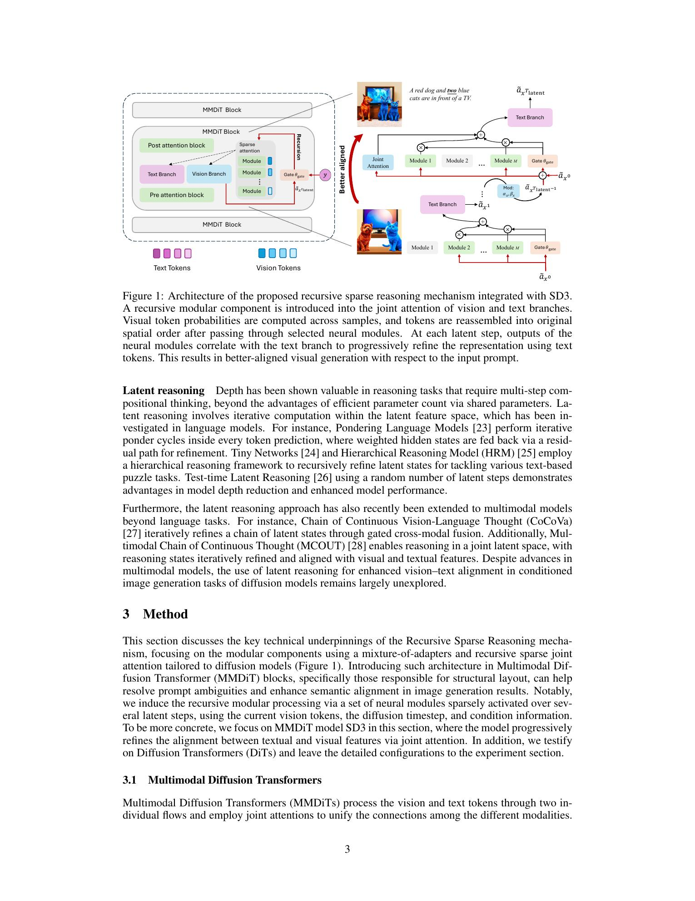

核心判断
这篇论文把 LLM 里的“多花一点推理计算”迁移到图像生成，但迁移路径很克制：它没有让扩散模型在自然语言里写 CoT，也没有在采样阶段做昂贵的全模型反复前向，而是在 MMDiT 的 joint attention 附近插入一个递归的 mixture-of-adapters。每个 latent step 只激活一个 LoRA expert，让视觉 token 在文本条件、扩散 timestep 和当前视觉状态共同控制下反复细化。
所以它最值得关注的 insight 是：视觉生成里的 test-time compute 不一定要表现为更多 denoising steps 或更大 backbone，也可以表现为同一层内部对局部表示的多步稀疏计算。如果这个方向成立，图像模型的布局、计数、属性绑定、空间关系错误，可能会从“靠更大模型记住更多组合”转向“给关键 token 一点可路由的内部修正预算”。
问题背景：扩散模型的一次前向为何容易错位
现代 text-to-image 模型可以生成高保真图像，但在组合指令上经常犯很具体的错误：红色物体和蓝色物体互换、对象数量不对、空间关系颠倒、某个小物体缺失。问题不只是“模型不够大”，还在于很多架构把 prompt conditioning 和视觉 latent 的交互做成一次性、单调的前馈变换。
语言模型的 test-time compute 可以通过多采样、搜索、verifier、CoT 或 latent recurrence 给困难样本更多计算。但图像 latent 是连续的、密集的，不像文本 token 那样天然有离散步骤。朴素地把中间视觉状态反复喂回整条冻结主干，会带来两个问题：计算成本重，且重复暴露在固定主干表示里容易产生 representation drift 和累积伪影。
属性绑定
提示词要求“红狗和两只蓝猫”时，模型必须把颜色、类别、数量绑定到正确对象，而不是只生成大致相关的语义集合。
空间关系
“钥匙在鸡的上方”“手套在熊右侧”这类关系需要跨 token 的结构约束，不是局部纹理质量可以解决的。
计算预算
如果每个 prompt 都靠扩大 backbone 或增加大量采样修复，成本会落到所有样本上，而不是集中给难组合。
机制拆解：递归、稀疏、低秩三件事如何扣在一起
论文的核心模块叫 Recursive Sparse Reasoning。它把一组轻量 neural modules 放进 MMDiT 的 joint attention 区域，视觉 token 被路由到某个 LoRA adapter，经过若干 latent steps 后再和冻结主干的输出合并。这个结构有四个关键约束。
选层
目标不是全模型循环，而是选择对结构布局更敏感的 joint attention 层；SD3-medium 实验里既有中间层，也有第 4 / 8 / 12 层的多层设置。
路由
gate 根据当前视觉 token、扩散 timestep、文本条件计算 expert 概率，用 Gumbel-Softmax 做可训练的 hard selection。
递归
中间 latent steps 只用 adapter 输出做递归更新，文本 token 保持为 joint attention 上下文，视觉 token 保持空间重组。
回主干
冻结 base model 的输出只在最后一步合入，避免每一步都重复经过固定主干导致分布漂移和伪影累积。

为什么是 mixture-of-adapters，而不是普通 MoE
这里的 expert 不是完整大 FFN 专家，而是作用在 vision branch 的 query / key / value 投影上的 LoRA 低秩更新。这样有两个好处：第一，递归时新增参数和计算相对受控；第二，adapter 空间限制了更新幅度，避免内循环把视觉表示推离原模型分布太远。论文附录给出的主要超参包括 LoRA rank 128、expert 数量 1 / 2 / 5、max latent steps 1 / 2 / 5、Gumbel softmax temperature 5.0。
为什么 thread 里的 PCA 图重要
论文的 PCA 可视化不是为了证明模型“想明白了”，而是为了观察路由是否真的产生差异化。早期高噪声 diffusion timestep 中，不同 token 的 trajectory 比较统一；后期低噪声阶段，trajectory 分叉，显示 patch-specific 的路径。这个结果支持一个更细的判断：递归计算的收益可能主要来自生成后段的局部结构和属性修正，而不是从一开始就对所有 token 做同样深度的计算。
实验证据：哪些数字支持，哪些数字需要降温
论文的数字整体支持“递归稀疏 adapter 有帮助”，但不是每个 benchmark 都是单调胜利，也不是每个设置都优于 SFT。更准确的读法是：recursion 和 modulation 都有贡献，多层替换通常优于单层，但最优 expert / step 数依任务而变。
| 实验 | 基线 | 递归版本 | 可得结论 |
|---|---|---|---|
| ImageNet 256 class-conditioned | DiT-XL/2：FID 2.34，Recall 0.57 | Ours：FID 2.27，Recall 0.62 | 在同样 675M size 下，FID 和 recall 有小幅提升；但 DiffuSSM-XL 的 sFID / precision 更好，不能说全面碾压。 |
| GenEval，SD3-medium | SD3-medium overall 67.93；SFT 单层 68.33，多层 69.55 | 多层 M=2 / T=2 overall 71.18 | 递归 + modulation 对 text-following 有明确收益，尤其 two object、counting、color attr 有改进；position 项仍弱。 |
| DPG benchmark | SD3-medium overall 85.65；SFT 85.72 | M=5 / T=5 overall 85.88；M=2 / T=2 为 85.31 | 更深递归在 DPG 上才给最好 overall，2-step 版本反而低于基线；这说明 depth allocation 不能简单固定。 |
| FrozenLake 视觉导航 | 不是主流 agent benchmark 对照 | 可从初始帧生成若干 latent decoded states | 只说明 visual latent 可携带动作后果相关性；失败案例包括掉进洞和出现训练数据未提供的对角动作。 |
术语对齐
latent step
不是扩散采样 timestep，而是插入模块内部的递归计算步。论文用 `Tlatent` 控制这个内循环深度。
diffusion timestep
扩散过程中的去噪时间位置，表示当前图像 latent 还处于高噪声还是低噪声阶段；它参与 gate 输入。
Mixture-of-Adapters
把多个 LoRA adapter 当作轻量专家，由 gate 每步选择一个。它比完整 MoE 专家更便宜，也更适合插入已有冻结主干。
Gumbel-Softmax
训练时近似 hard expert selection 的技巧：前向像选一个专家，反向仍能把梯度传给路由网络。
representation drift
中间表示在多次递归后偏离原模型熟悉分布，导致画质下降或伪影累积。论文通过只在最后一步合入冻结主干来缓解。
test-time compute
推理阶段给困难样本更多计算预算。本文的版本不是多采样投票，而是局部 latent 表示在网络层内部多迭代几步。
边界与风险
这项工作当前最明显的边界是递归深度仍是静态超参。easy prompt 和 hard prompt 都跑同样的 latent steps，会浪费计算；更深递归也不保证更好，DPG 结果已经提示任务差异。论文自己也指出需要 halting mechanism 来决定何时停止 latent reasoning。
如果早期路由或视觉 latent 已经被错误条件牵引，内循环可能把错误局部结构反复强化。线程里提到 hallucination amplification，论文结论中也提到可能放大 misleading visual content。
Gumbel-Softmax temperature 控制选择稀疏性和探索。温度不合适会导致专家不分化、路由抖动或过早坍缩，真实系统需要监控 expert usage 与 token trajectory。
另一个需要注意的点是数据规模：text-to-image 训练部分使用 MSCOCO 1000 samples 进行 fine-tuning，说明它更像验证结构有效性的实验，而不是完整商业图像模型训练结论。后续如果要落地，需要在更大 prompt 分布、更多语言、多风格、多分辨率和安全审计上重测。
工程启发：从“更大模型”转向“可审计的内部预算”
这篇论文对工程系统的启发在于，它把“模型哪里需要更多计算”变成了可观察的路由问题。相比继续扩大 backbone，递归 adapter 给了几个更可控的观测面：哪些 token 被哪个 expert 处理，哪些 diffusion timesteps 发生分化，增加 latent steps 后哪些 prompt 类型真正受益，哪些错误会被放大。
自适应 depth
下一步不应只是固定 `Tlatent=2/5`，而应让 halting 或 confidence 机制决定哪些 patch、哪些 prompt、哪些 timestep 继续迭代。
routing audit
上线前应记录 expert usage entropy、token trajectory divergence、失败样本路由模式，避免路由网络学到数据偏见或退化捷径。
局部 verifier
图像生成的 test-time compute 可能需要和局部结构 verifier 结合，例如对象计数、颜色绑定、空间关系 detector，而不是只看全局 CLIP 类指标。
更大的方向是：视觉生成系统可能会出现类似 reasoning LLM 的预算分配层，但它的形态不会简单复制文本 CoT。对图像模型来说，更自然的载体是 latent token、patch、attention layer、adapter、router 和局部结构评估器。
证据边界与资料索引
本文以 X 线程、arXiv 元数据、论文 PDF 正文和公开 Substack 片段为证据。Substack 长文公开读取只覆盖 TL;DR 与引言，后半部分受 paywall 限制，因此方法、表格和边界判断以 arXiv PDF 为主。X 配图短链多数解析到图片页，本文不把图片文案当作独立事实来源。
用于确认传播口径、作者解读、末帖链接和配图位置。
opencli twitter thread "https://x.com/che_shr_cat/status/2061206236243111979" --limit 100 -f json
用于核验作者、摘要、模型机制、ImageNet / GenEval / DPG / FrozenLake 实验和 limitations。
opencli arxiv paper "2604.25299" -f json
公开读取范围有限，仅作为 TL;DR 和背景表达参考。
opencli web read --url "https://arxiviq.substack.com/p/the-thinking-pixel-recursive-sparse" --stdout true --download-images false -f json
下载 PDF 后使用 `pdfinfo` 确认 13 页，使用 `pdftotext -layout` 抽取正文，并从 PDF 第 3 页生成本页结构配图。